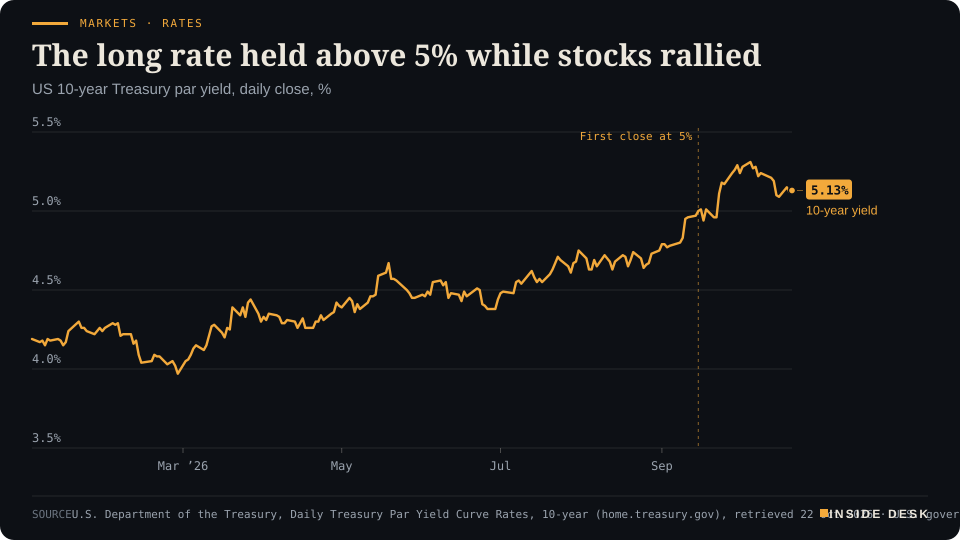
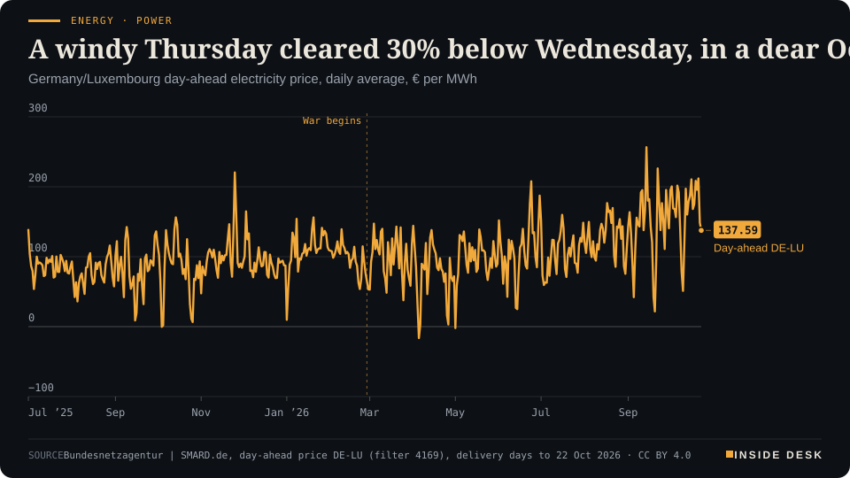
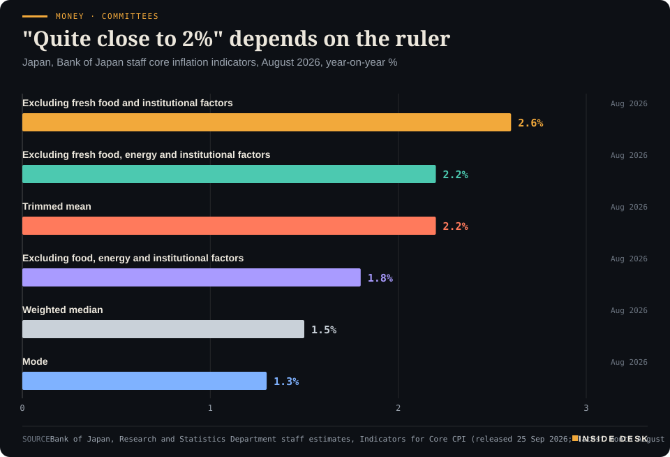

Inside Desk ePaper, Morning ePaper · Thu 22 Oct 2026
Thursday, 22 October 2026Always free
Inside Desk
Morning ePaperAvailable 06:34 CEST · Berlin
Lead · Psychology & Behaviour
A merger remark lifted two share prices, and three companies that beat their forecasts fell anyway. Markets grade results against what people were told to expect.
A merger remark lifted Tesla before its quarter did, and companies that beat their forecasts fell anyway. Meta spent more on buildings than it brought in, and the wind came back to Germany's power auction. Eleven desks, every number sourced.
A single remark moved Tesla's shares more than its quarter did, Meta spent more on data centres than its business brought in, and on Thursday the wind came back and cut Germany's wholesale power price by almost a third.
Geo-economics · p. 5
Markets & Macro · p. 6
Energy & Industry · p. 9
Climate & Weather · p. 17
The day in one sentenceA single remark moved Tesla's shares more than its quarter did, Meta spent more on data centres than its business brought in, and on Thursday the wind came back and cut Germany's wholesale power price by almost a third.
ContentsInside Desk · Morning ePaper22 October 2026
A merger remark lifted Tesla before its quarter did, and companies that beat their forecasts fell anyway. Meta spent more on buildings than it brought in, and the wind came back to Germany's power auction. Eleven desks, every number sourced.
11 edition pieces · 11 desks · Available 06:34 CEST, 22 October 2026
21 ePaper extras, added , 22 October. They appear only in the ePaper and carry their own time.
17:30 Evening ePaper, updated live until 22:30 with an “Updated” time and a Latest page
Sun 10:00 The Sunday Magazine
Berlin time. Every issue is free.
How to read it
Swipe, use the arrow keys or the page strip. Tap any headline for the reading view. Press / to search, t for contents, +/− to zoom. Download the PDF.
LeadInside Desk · Morning ePaper22 October 2026
Psychology & Behaviour · Lead · 4 min
A merger remark lifted two share prices, and three companies that beat their forecasts fell anyway. Markets grade results against what people were told to expect.
On Wednesday, the most expensive sentence on Wall Street was not in an earnings release. After SpaceX posted its first profit as a listed company, Elon Musk said a merger of SpaceX and Tesla would be “a good idea”1. SpaceX closed 7.8% higher. Tesla, which had not yet reported a single number for the quarter, rose 3.4%1. A remark about a deal that does not exist moved a carmaker’s shares more than many quarterly results move a share price.
Then the numbers arrived, and the mood went the other way. Tesla beat forecasts on both lines: 48 cents of adjusted earnings per share against 43 cents expected, and revenue of $28.05 billion against $27.88 billion2. Its shares first rose a little after the close and then slipped, trading about 2–3% lower in the evening1,2. Cboe noted that the fall came before the conference call had even started3. IBM also beat on earnings and revenue; its shares “initially popped” and were last down more than 3%2. Lam Research guided slightly above estimates and dropped more than 5%2. Earlier in the day, AT&T beat, raised its outlook and closed 6.5% lower1.
What the day was measuring. None of this is irrational, and none of it is mysterious. A price is not a verdict on whether a company did well. It is a verdict on whether it did better than the story people had already paid for. Psychologists call that story a reference point: people judge an outcome as a gain or a loss relative to what they expected, not relative to zero. Wednesday showed the two ways a reference point is set. One is the numbers analysts publish before the release. The other is words: a founder’s aside, a guidance range, a rival’s plans.
By the time Tesla reported, the reference point had moved. A 3.4% rise built on a merger remark had already lifted the bar the quarter had to clear. The results beat the analysts’ bar and still fell short of the new one. AT&T is the mirror image. Its quarter was solid by its own accounts, but the reference point was set by a competitor: SpaceX’s plan to turn Starlink into a US mobile carrier5. AT&T’s chief executive answered with plain arithmetic. He told analysts not to “over-rotate on what I would call one carrier of low-band spectrum”5. Arithmetic is slower than a headline. It usually wins in the end, but not on the day.
LeadInside Desk · Morning ePaper22 October 2026
Relief is measured against fear. Meta offers the third lesson. Its revenue of $64.60 billion beat forecasts and the shares rose about 3% after hours2,4. One prominent analyst called its spending “better controlled than feared”2. Look at the release itself, though. Meta’s 2026 capital spending range is now $135–145 billion, narrowed by raising the floor from $130 billion. Quarterly capital spending was $34.91 billion, and free cash flow was minus $2.12 billion4. The company is also creating a new class of non-voting shares, partly for “capital raising”4. The relief was real, but it was measured against the fear, not against the bill. “Better than feared” is a statement about the mood beforehand, and it says nothing about the cash.
The insurance people buy before the news. The calmest behaviour of the day was the least visible. Before Procter & Gamble reports on Thursday, options traders are pricing a move of about 3% either way, and put contracts at one strike are 1.5 times more active than normal, Cboe noted, “suggesting hedging may be in play”3. Honeywell had four times the usual number of puts at one strike for Friday’s expiry3. People who know that the reference point can move without warning pay a small, known price beforehand to avoid a large, unknown one afterwards. That is not pessimism. It is good housekeeping.
What you can take from it. You do not need to trade anything to use this. When you see “shares fell despite strong results”, there is a question to ask: what was the price measuring itself against? Usually the answer is a sentence: a guidance line, a chief executive’s aside or a rival’s announcement, and you can find it. When you hear “better than feared”, ask what the fear was and then look at the number underneath. Meta’s negative free cash flow was in its own press release4. AT&T’s raised outlook was in the release that preceded a 6.5% fall1,5.
Statements set expectations, but data settles them, and the settling takes longer than a trading day. The useful skill is not to react faster than other people. It is to read the release before you read the reaction. Nothing here is advice.
Geo-economicsInside Desk · Morning ePaper22 October 2026
Geo-economics · 2 min
The full count for Wednesday came in at ten AIS-visible crossings of the Strait of Hormuz. Overnight Iran's foreign minister set out his terms in a newspaper. One of those is a ledger, the other an opening bid.
Yesterday evening this desk counted nine ships by mid-afternoon. The complete UTC day closed at ten AIS-visible commercial crossings of the Strait of Hormuz: six into the Gulf and four out, one of them a tanker and nine cargo ships1. The tanker was a small products carrier, 105 metres long, bound for the UAE1. The average since 19 October is 5.7 crossings a day, against a pre-crisis baseline of 84.81. Desk arithmetic: ten crossings is about 12% of a normal day.
The method, again. The counter sees only ships that broadcast their position; its counts “miss ships running dark”, and it leaves out small craft, of which nine more crossed on Wednesday1. The official comparison, IMF PortWatch, has still not published anything after 18 October1. So ten is a floor, and a floor that moved up.
The letter. Overnight Iran’s foreign minister, Abbas Araghchi, took his case to a Western newspaper. “Iran is prepared to give diplomacy another chance if we see strong evidence of a sincere desire on the part of the US,” he wrote in the Financial Times, as reported by Bloomberg2. The price of that evidence is specific: lift the naval blockade and return to the Islamabad memorandum signed in June, under which Iran was to reopen the strait and the US was to lift the blockade, release frozen oil funds and remove sanctions2. “If they adhere to these conditions, they should know that the Strait will be fully opened,” he said in an earlier interview with Iraqi media2. In that interview he also claimed Washington had accepted Iran’s conditions for a seven-day reopening plan but wanted extra clauses; the US has not confirmed his account3.
The other side of the table. Bloomberg notes that the US has shown “little appetite” to return to the June memorandum, and that President Trump has suggested he may restart bombing after the 3 November midterms2. Brent rose above $110 a barrel on Wednesday2.
Why this matters to you. Your fuel bill does not read op-eds; it reads tanker crossings and insurance quotes. A minister naming conditions in public is useful, because conditions can be met or refused on the record. But until the visible count climbs for days in a row, the strait is open in print and narrow in fact. Nothing here is advice.
Geo-economics · Short item · ePaper extra, added
Macron's Gulf tour ended in Doha with a joint statement whose most useful phrase is about money, not ships.
President Emmanuel Macron’s tour of the Gulf, which took in Kuwait, the UAE, Bahrain and Saudi Arabia, closed in Doha with a joint statement with Qatar’s emir, Sheikh Tamim bin Hamad Al Thani1. The two leaders stressed the importance of restoring freedom of navigation in the Strait of Hormuz “without constraints or fees”1. They also “condemned Iranian military attacks against countries in the region”, calling them a serious breach of international law1.
The last two words of that first phrase do the work. A strait that reopens with a toll, or with a permit system run by one coastal state, is not the strait the shipping and insurance contracts were written for. …
Geo-economics · Brief · ePaper extra, added
Canada and Ontario unveiled a C$9 billion ($6.4 billion) package on Wednesday for steel and car makers hit by US tariffs1. More than C$5 billion goes into a steel action fund, so mills can upgrade machinery, make more of what Canada needs and sell to non-US markets1. C$2.5 billion supports electric-vehicle production, and Ottawa will spend C$1 billion on roads to the remote, mineral-rich Ring of Fire1. A tariff is answered fastest by a customs officer; it is answered best by a new customer.
Markets & MacroInside Desk · Morning ePaper22 October 2026
Markets & Macro · 2 min
The S&P 500 is on course for its best month since April, with the US 10-year yield still at 5.13%. Underneath the index, more Nasdaq stocks hit new lows than new highs.
Wall Street closed higher on Wednesday for a third day. The S&P 500 rose 0.58% to 7,757.17, the Nasdaq Composite 1.05% to 26,702.86 and the Dow 0.69% to 52,856.091. Cboe notes the S&P 500 is now on its best pace for a monthly gain since April, and the VIX volatility index fell 3.6% to below 172. The trigger was a pair of results that eased worries about AI spending: SpaceX’s first profit as a listed company and a stronger outlook from Super Micro Computer, which rose 9.6%1.
What did not move is the price of time. The US 10-year Treasury yield closed at 5.13% on 21 October, against 4.19% on the first trading day of the year3. It first closed at 5% on 15 September and has stayed at or above that level on every day since except three, peaking at 5.31% on 5 October3.
Markets · RatesThe long rate held above 5% while stocks ralliedUS 10-year Treasury par yield, daily close, %

Line chart of the daily US 10-year Treasury par yield since January 2026. It starts the year at 4.19% on 2 January, is at its low of 3.97% on 27 February, rises through the summer to 4.75% at the end of August, closes at 5.00% for the first time on 15 September, dips to 4.94–4.96% on three days in mid-September, peaks at 5.31% on 5 October and is 5.13% on 21 October 2026, the latest value.
Source: U.S. Department of the Treasury, Daily Treasury Par Yield Curve Rates, 10-year (home.treasury.gov), retrieved 22 Oct 2026 · U.S. government data, public domain · CSV
A rally against a 5% long rate is not impossible; it simply asks more of earnings, because future profits are discounted harder. That is why Wednesday was sorted by income statements, not by the bond market. It also explains how narrow the day was. On the Nasdaq, 53 stocks set new 52-week highs and 216 set new lows; on the NYSE the count was 131 highs against 221 lows1. Volume, 16.11 billion shares, was below the 20-session average of 17.10 billion1.
The night was less cheerful. After Meta, Tesla, IBM and Lam Research reported, S&P 500 futures fell 0.5% and Nasdaq-100 futures 0.7%, and Asia opened lower, with the Hang Seng down more than 2%4. One good day is a data point, not a trend; the yield line is the trend. Nothing here is advice.
Markets & Macro · Short item · ePaper extra, added
The quarter was the carrier's best for service revenue growth in more than four years. The share price was set by a rival that does not yet have a mobile network.
On paper, Wednesday was a good day for AT&T. Revenue rose 5.3% to $32.3 billion, adjusted earnings per share were $0.65 against $0.54 a year earlier, the company added 379,000 postpaid phone customers and a record 769,000 internet customers, and it lifted its 2026 adjusted EPS outlook to about $2.401. The shares closed 6.5% lower anyway2. T-Mobile US fell 2.5% and Verizon 2.2%2.
The reason sat in another company’s results. SpaceX confirmed it plans to turn Starlink into a major US mobile carrier and is buying low-band spectrum to do it3; its results and the spectrum purchase “fanned fears” of a new telecoms competitor, Huntington Bank’s Marc Dizard told Reuters2.
AT&T’s chief executive, John Stankey, answered with arithmetic. He told analysts not to “over-rotate on what I would call one carrier of low-band spectrum”, noting that AT&T runs six to eight such carriers in a typical city and that 40–45% of Chicago’s mobile traffic starts indoors, where satellite signals struggle3.
Both can be true: a threat can be years away and still priced tonight. What the quarter shows is that the existing network is earning more, not less. Nothing here is advice.
Politics & InstitutionsInside Desk · Morning ePaper22 October 2026
Politics & Institutions · 2 min
Germany's new tobacco tax law, read in the Federal Law Gazette itself. The mistake everyone is talking about sits in one short article; the reason it bites sits in a single letter of the tariff.
Today’s annex is the document itself: the law amending Germany’s tobacco tax act, dated 19 October 2026 and published in the Federal Law Gazette, issue 2026 I No. 309, on 20 October1. It runs to three pages and three articles. It is signed by President Steinmeier, Chancellor Merz and Finance Minister Klingbeil1.
Article 3. The clause in the headlines is one sentence: “Dieses Gesetz tritt am Tag nach der Verkündung in Kraft” (“This law enters into force on the day after its promulgation”)1. There is no second paragraph and no separate date for the new rates1. So everything in the law took effect on 21 October2.
Why that matters: letter a. Article 1 replaces the tariff in §2(1). For cigarettes, letters b to e each begin with a period: 1 January to 31 December 2027, then 2028, 2029, and 1 January 2030 to 14 February 20311. Letter a has no period. It sets 18.57 cents per cigarette plus 21.05% of the retail price “vorbehaltlich der Buchstaben b bis e”, meaning “subject to letters b to e”1. Read literally, letter a covers every day that b to e do not, and that includes the rest of 2026. The 2027 rate under letter b is 14.34 cents1. Desk arithmetic: the text as printed would tax a cigarette this autumn 4.23 cents more than next year. Fine-cut tobacco and cigars follow the same pattern1.
What the text meant. The rest of the law points one way. Article 1 also allows new tax stamps to be bought five weeks before a change in the tariff, and Article 2 sets stamp-ordering rules that run “bis zum 31. Dezember 2026”1. Customs gives that as the reason for early entry into force: to allow time to make and order new stamps2. Its notice says the old rates apply unchanged until 31 December 20262.
The repair route. The finance ministry wants to use §61 of the federal ministries’ joint rules of procedure, which covers “printing errors and obvious inaccuracies”. After a law has been passed, that needs the consent of the presidents of the Bundestag and the Bundesrat3. The ministry says the error was already in its own draft3. …
Politics & Institutions · Short item · ePaper extra, added
France's prime minister invited every party to Matignon on Thursday and promised transparency about 17 October. Several leaders will send deputies instead.
Prime Minister Sébastien Lecornu receives France’s parties at Matignon early on Thursday afternoon. The interior and justice ministers, Laurent Nuñez and Gérald Darmanin, will be there, along with the heads of the intelligence services and the police1. In his letter of invitation he promised “transparency” about how 17 October unfolded, including the “difficulties encountered”, so that “everyone can have the same information”1.
France’s Défenseur des droits, the independent rights ombudsman, said on Tuesday that it had received 46 complaints since the school pupils’ movement began, “more than ten” of them about events last weekend1. AFP notes that the policing strategy is still being sharply questioned1. On the same day President Macron said from Qatar that the “hand must not tremble at the top of the state”1. Both can be true. A state that is firm in the street and answers to its ombudsman afterwards is the kind worth trusting.
Psychology & BehaviourInside Desk · Morning ePaper22 October 2026
Psychology & Behaviour · Short item · ePaper extra, added
Swedish records linking conscription test scores to donations and votes found higher cognitive ability went with more of both, even between twins. The link to green cars faded once education and income were counted.
Most studies of generosity ask people how generous they are. Mikael Elinder and Oscar Erixson used receipts instead. In a study published in The Economic Journal, they matched the military enlistment test scores of more than 1.2 million Swedish men, tested between 1969 and 1997, with tax records of charitable donations, which Swedish charities report automatically, with validated turnout in the 2009 European election and with the national vehicle register1.
Across the population, one standard deviation higher on the test went with a 40% higher likelihood of giving to charity, 31% for voting and 14% for owning a car running on electricity, ethanol or gas1. Among 5,786 twin pairs, who share an upbringing, the links roughly halved but stayed: 26% for giving and 13% for voting1. Income did not explain much. Once education, income and family circumstances were accounted for, the green-car link was no longer statistically significant, while giving and voting held1.
The limits are plain. The sample is mostly Swedish men born between 1951 and 1979, and helping a neighbour does not show up in any register1. The method is the point: the register tells you what people do, which is not always what they report.
In a University of East Anglia study of 37 older and 37 younger adults, published in Psychology and Aging, both groups recalled one-off events equally accurately, 81% against 80%1. But only 66% of the older group’s details were specific to the episode, against 79% for the young; general facts filled the gap1. Because that pattern held under every instruction, the authors read it as a meaningful narrative style, not compensation for failing memory1. The older group also rated their memories as more vivid1. The sample was small and not preregistered1. Fewer details, it seems, need not mean less memory.
Energy & IndustryInside Desk · Morning ePaper22 October 2026
Energy & Industry · 2 min
Thursday's German power cleared at €148.61 a megawatt hour, 30% below Wednesday. Nobody gave a speech about it. The forecast simply had twice as much wind and sun in it.
Germany’s day-ahead power auction cleared Thursday’s delivery day at an average of €148.61 per megawatt hour, according to the Bundesnetzagentur’s SMARD data1. Wednesday’s delivery day had cleared at €211.941. Desk arithmetic: that is a fall of about 30% in a single day, and the cheapest day since 11 October (€122.31)1.
What changed. Not gas, not a summit, not a speech. The forecasts that the auction runs on changed. SMARD’s day-ahead forecast for Thursday puts onshore wind at about 634 gigawatt hours, against about 237 for Wednesday; wind and solar together come to about 920 GWh, against about 4212. Desk arithmetic: forecast wind and solar cover roughly 70% of Thursday’s forecast consumption of about 1,319 GWh, against roughly 31% on Wednesday2. When more hours are met by wind, fewer are set by a gas plant, and the average falls.
Energy · PowerA windy Thursday cleared 30% below Wednesday, in a dear OctoberGermany/Luxembourg day-ahead electricity price, daily average, € per MWh

Line chart of the daily average German-Luxembourg day-ahead electricity price since July 2025, in euros per megawatt hour. Monthly averages stay between about €77 and €110 through July 2026, including the months after the war begins at the end of February; the daily low is −€16.34 on 5 April. The price climbs from August, averaging €144.82 in September with a daily high of €256.55 on 14 September, and €168.96 over 1 to 22 October, against €95.54 over the same days of 2025. The latest value, for delivery on Thursday 22 October 2026, is €148.61, down from €211.94 for Wednesday 21 October.
Source: Bundesnetzagentur | SMARD.de, day-ahead price DE-LU (filter 4169), delivery days to 22 Oct 2026 · CC BY 4.0 · CSV
What did not change. One windy day does not make a cheap month. Over 1 to 22 October the daily price has averaged €168.96, against €95.54 for the same days of 20251. Desk arithmetic: about 77% higher. September averaged €144.821. …
Energy & Industry · Short item · ePaper extra, added
The Energy Department offered up to 315,000 barrels from the Northeast reserve on Wednesday. It is an exchange, not a gift, and the paperwork says so.
The US Department of Energy on Wednesday invited bids for an exchange of up to 315,000 barrels of ultra-low sulphur fuel oil from the Northeast Home Heating Oil Reserve, held in South Portland, Maine, Boston and New Haven1. Reuters puts that at nearly a third of the one-million-barrel reserve2.
The terms are the interesting part. …
Energy & Industry · Brief · ePaper extra, added
US commercial crude stocks fell 3.1 million barrels to 412.5 million in the week to 16 October, 3% below the five-year average, the Energy Information Administration reported; refineries ran at 93.4% of capacity1. Analysts polled by Reuters had expected a draw of 820,000 barrels2. Brent futures still settled just 3 cents higher on Wednesday, at $108.82, and WTI fell 67 cents to $97.152. Reuters cites the Kremlin’s word that Putin agreed to resume US-mediated talks with Ukraine as the weight on the other side2. An inventory is a fact; a talk is a possibility. For one session, they cancelled out.
Money, FX & CommitteesInside Desk · Morning ePaper22 October 2026
Money, FX & Committees · Podium vs Print · 2 min
A Bank of Japan deputy governor told parliament that underlying inflation is quite close to target, and argued for more rate rises. The bank's own six staff measures for August run from 1.3% to 2.6%. He is right on average, and the average is the argument.
Podium
“…underlying inflation is quite close to 2% and will likely converge to levels consistent with our price target.”
Ryozo Himino, Deputy Governor, Bank of Japan, in parliament, 21 October 2026
Print1.3% to 2.6%
The bank's six staff measures of underlying inflation for August 2026, from a mode of 1.3% to 2.6% excluding fresh food and institutional factors.
Bank of Japan, Research and Statistics Department staff estimates, Indicators for Core CPI, August 2026 (released 25 September 2026, latest available)
The podium. On Wednesday Ryozo Himino, a deputy governor of the Bank of Japan, told parliament that “underlying inflation is quite close to 2% and will likely converge to levels consistent with our price target”1. He added that financial conditions “remain accommodative” even after last month’s rate rise, and that “delaying necessary adjustment to monetary support” could let inflation risks materialise1. In plain words: more rises are coming, and the case rests on that one phrase about underlying inflation.
The print. “Underlying” is not one number. The bank’s own research staff publish six measures that strip out different kinds of noise, from fresh food and energy to policy effects such as subsidies and free school lunches2. For August, the latest month available, they range from 1.3% to 2.6%2:
Money · Committees"Quite close to 2%" depends on the rulerJapan, Bank of Japan staff core inflation indicators, August 2026, year-on-year %

Bar chart of six Bank of Japan staff measures of underlying inflation for August 2026, year on year: excluding fresh food and institutional factors 2.6%; excluding fresh food, energy and institutional factors 2.2%; trimmed mean 2.2%; excluding food, energy and institutional factors 1.8%; weighted median 1.5%; mode 1.3%. Three are at or above 2.2%, three below 2%; the target is 2%.
Source: Bank of Japan, Research and Statistics Department staff estimates, Indicators for Core CPI (released 25 Sep 2026; latest month August 2026). Trimmed mean 2.16% and weighted median 1.54% rounded by the desk · CSV
The broad measures, which exclude fresh food and institutional factors, sit at 2.6% and, without energy, 2.2%2. The trimmed mean, which drops the most extreme price changes at both ends, is 2.2%2. The narrower measures are lower: 1.8% excluding all food and energy, a weighted median of 1.5% and a mode of 1.3%2. The trend is rising, though. …
Money, FX & Committees · Short item · ePaper extra, added
An outlook "materially worse", and November left open.
Central bankers rarely say “I don’t know” in public. Andrew Hauser, deputy governor of the Reserve Bank of Australia, came close on Wednesday. …
Money, FX & CommitteesInside Desk · Morning ePaper22 October 2026
Money, FX & Committees · Brief · ePaper extra, added
Bank Indonesia kept its benchmark rate at 5.75% on Wednesday but raised its deposit facility rate by 25 basis points to 5%, Governor Destry Damayanti said; the lending facility stayed at 6.5%1. Banks parking money at the central bank now earn more, which narrows the corridor from below. It also sweetened incentives for hedging through its domestic non-deliverable forwards, to attract foreign capital and keep the rupiah stable1. The inflation target stays at 2.5%, plus or minus one point, for 2026 and 20271. The headline rate held; the plumbing moved.
Ordinary & Inherited LifeInside Desk · Morning ePaper22 October 2026
Ordinary & Inherited Life · 2 min
Gas for a household signing today costs 28% more than in January; electricity 6% more. People in running contracts have not felt it yet, says the industry's own count. The letter is the thing to watch.
The energy industry association BDEW’s latest price check carries data as of 20 October1. Its headline is short: rising prices for households “am aktuellen Rand”, at the current margin1.
The figures. A gas contract that a single-family household can sign today averaged 14.2 cents per kilowatt hour on 15 October, 3.1 cents or 28% more than at the start of the year1. Electricity for a household using 3,500 kWh a year averaged 39.3 cents, 2.1 cents or 6% more1. For customers in running tariffs, whose prices were usually set at the turn of the year or fixed, BDEW says there has been no effect “bislang”, so far1.
The ledger. Desk arithmetic, at BDEW’s reference volumes: 20,000 kWh of gas at the new-contract average costs about €2,840 a year, €620 more than at January’s price. 3,500 kWh of electricity costs about €1,376, €73.50 more. Grid fees add a little in January: Verivox estimates about €19 a year for that gas household and about €8 for a 4,000 kWh electricity household, with large regional differences, Berlin among the steepest3.
What protects you. A supplier must tell you of a price change at least a month before it applies, give the reason and the size, and point out your right to terminate early2. A price guarantee in the contract can rule an increase out, though often only for the parts the supplier controls2. If you are in the basic supply, the Grundversorgung, you can leave with two weeks’ notice at any time2. Desk arithmetic: a change for 1 January has to be announced by about 1 December.
The constructive reading. The gap between the new price and the running one is time, and time is useful. It is the window in which to find your contract, note the end date and read every letter from your supplier, including the ones that look like advertising, which the regulator warns can hide increases2. Nothing here is advice.
Ordinary & Inherited Life · Short item · ePaper extra, added
Deutsche Post is using the room the regulator signalled. The standard letter rises 20 cents; the Maxibrief more than doubles in its new form.
Deutsche Post plans to charge €1.15 for a standard domestic letter from 1 January 2027, up from 95 cents, subject to the Bundesnetzagentur’s final approval1. A postcard also goes to €1.15, the Kompaktbrief from €1.10 to €1.25, the Großbrief from €1.80 to €2.35 and the Maxibrief from €2.90 to €5.001. Registered-mail surcharges and private PO box rents stay unchanged1. The new prices are meant to last two years, within a price-increase margin of 20.35% for letters that the regulator has signalled1.
Desk arithmetic: the standard letter rises 21%; the Maxibrief 72%, though it may then weigh up to two kilograms1. A household that posts ten standard letters a month pays €2 more.
The company’s own estimate is milder: households spend a little over €4 a month on letters and parcels, per the Federal Statistical Office, and it puts the extra at about 75 cents a month1. Its reasons are the dull ones: falling letter volumes and a nationwide network of post boxes and branches whose cost is spread over fewer letters1. One small gain: from January a Päckchen comes with tracking and liability up to €20, though its weight limit drops to one kilogram1. Nothing here is advice.
Ordinary & Inherited Life · Brief · ePaper extra, added
A hundred litres of heating oil cost €173.38 on the German average on Thursday morning, for a 3,000-litre order, unchanged on Wednesday, according to HeizOel241. That is €3.00 more than a week ago and €40.16 more than three months ago; the high of the last three years was €179.02 on 16 September 20261. Desk arithmetic: a 3,000-litre delivery costs about €5,201, some €1,205 more than in July. Orders are binding once placed, and delivery usually takes two to four weeks1. Nothing here is advice.
Tech & ComputeInside Desk · Morning ePaper22 October 2026
Tech & Compute · 2 min
Meta's third-quarter revenue beat forecasts by more than a billion dollars. Its free cash flow was negative for the quarter, and it announced a new class of non-voting shares to help pay for what comes next.
Meta reported third-quarter revenue of $64.60 billion on Wednesday, up 26% on a year earlier and ahead of the $63.37 billion analysts had expected, according to CNBC1,2. Its shares rose about 3% in extended trading2. That is the podium version. The cash-flow statement tells a plainer story.
The cash. Meta’s operating activities brought in $32.79 billion in the quarter1. Its capital expenditures, including principal payments on finance leases, were $34.91 billion1. Free cash flow, the difference, was minus $2.12 billion, against plus $10.63 billion a year earlier1. Desk arithmetic: purchases of property and equipment rose from $18.83 billion to $33.94 billion, an increase of about 80%1. Meta ties the spending to the computing capacity it has and “what is scheduled to come online”1. For one quarter, building it cost more than the business generated.
The balance sheet. None of this is distress. Meta ended September with $82.45 billion in cash and marketable securities1. But long-term debt stood at $80.92 billion, up from $58.74 billion at the end of 2025, and net property and equipment rose from $176.4 billion to $253.2 billion over the same nine months1. Headcount fell 15% to 66,7751. Fewer people, more concrete.
The new share class. Meta’s board approved a new class of listed, non-voting Class C shares, to be issued as a one-for-one stock dividend once the change takes effect on 19 January 20271. The company names “capital raising” first among the reasons, alongside pay and possible acquisitions, and says the scale of investment the AI race demands is “significant”1. Meta says the stock dividend “will not change the voting power of any shareholder”, and the board presents the change as a way to keep the “founder-led model”1.
The outlook. Meta narrowed its 2026 capital-spending range to $135–145 billion, from $130–145 billion, and said it would keep “investing aggressively” next year without giving a figure1. Desk arithmetic: nine-month spending was about $85.8 billion, so the range implies roughly $49–59 billion in the fourth quarter alone1. The quarter’s results also include a $9.89 billion charge for a settlement with US state attorneys general over teen mental health1.
The constructive reading: a company with an advertising business growing 26% can afford to build. The question for the next few quarters is not whether Meta can pay, but how long it is willing to pay more than it earns in cash. Nothing here is advice.
Tech & Compute · Short item · ePaper extra, added
The machines that etch and deposit the layers of a chip had their best quarter ever. Investors sold the shares anyway.
Lam Research, which makes the equipment chip factories use to deposit and etch the layers of a semiconductor, reported revenue of $8.22 billion for the quarter to 27 September, up 22% on the previous quarter1. Chief executive Tim Archer called it a record for revenue, profit and earnings per share1. Desk arithmetic: against $5.32 billion a year earlier, revenue rose about 54%, and sales of new systems rose from $3.55 billion to $5.73 billion1.
The geography is the line to read. …
Tech & Compute · Brief · ePaper extra, added
IBM’s third-quarter revenue rose 5% to $17.1 billion, with software up 8% to $7.8 billion1. Inside infrastructure, the two halves went opposite ways: IBM Z mainframes fell 20%, while distributed infrastructure rose 31%1. Mainframe sales tend to follow product cycles, so one quarter is not a verdict. Free cash flow was $3.0 billion, up $0.7 billion, and IBM now expects full-year free cash flow to rise by more than $1 billion1. It also noted that it has paid a dividend every quarter since 19161. Nothing here is advice.
Health & CareInside Desk · Morning ePaper22 October 2026
Health & Care · 2 min
Congo's latest situation report has 509 patients in hospital in North Kivu and 410 places in its treatment and transit centres. The other provinces have empty beds. The outbreak's next problem may be logistics more than medicine.
The Congolese health ministry’s situation report for 19 October, published on 20 October, recorded 85 new confirmed cases of Bundibugyo Ebola, bringing the total since the outbreak began to 9,637, with 4,646 deaths1. That is the headline line. The more useful line is on page seven, under case management1.
The beds. In North Kivu, 154 patients were admitted on 19 October and 95 left, ten of them cured1. That leaves 509 patients in hospital, 58 of them children under five1. The province’s Ebola treatment and transit centres were 81.0% full, with 332 patients for 410 places; suspected-case beds were 86.5% full1. And 177 patients, or 34.8%, were being cared for in ordinary health facilities that are not Ebola centres1. The report lists that among its “défis”, its challenges1.
The other provinces. The picture elsewhere is the opposite. Ituri, which still accounts for 72.7% of all confirmed cases, had 431 patients and an occupancy rate of 42.5%1. Haut-Uélé had 29 patients for 169 beds (17.2%) and Tshopo 13 for 36 (36.1%)1. Bas-Uélé is the exception, with its three beds for confirmed patients all taken and 47 people in isolation while a proper centre at Buta’s general hospital is still not ready1. Nationally, the tracker that compiles the bulletins counts 982 patients for 1,630 beds, or 60 per 1002.
Why it matters. Desk arithmetic: North Kivu took 59 more patients than it discharged in a single day. Each patient treated outside a dedicated centre is harder to isolate, and Ebola spreads through the bodily fluids that a ward has to contain. The province is also behind on the other side of the work: 79.7% of its 19,316 contacts were seen that day, below the 95% the response requires, and only 9 of 22 “rings” of disinfection and follow-up around new cases had been opened1.
The constructive reading. Laboratories are keeping up: 514 samples were analysed on 19 October, 16.5% of them positive1. Across all provinces, 3,184 alerts came in and every one was checked and classified1. The surveillance machinery is doing its job, and the bottleneck has moved downstream, to beds, ambulances and staff in one province. That is a better problem than not knowing where the cases are. It is a problem solved by trucks, tents and rosters rather than by speeches, which is why the next bulletins’ page seven is the one to read.
Health & Care · Short item · ePaper extra, added
Nigeria has grounded the contacts of its first Ebola patient for 21 days. In Ogun state, the people already traced finished their watch without a case.
Nigeria’s aviation minister, Festus Keyamo, has directed the civil aviation authority to place 46 people on a no-fly list for at least 21 days, Punch reports1. They are the 44 people who had contact with the country’s first Bundibugyo Ebola patient at the Abuja hospital where she was treated after falling ill, plus two of her domestic staff1. The 21 days match the period within which symptoms normally appear1. Airlines are to be notified, and airports are installing temperature-screening cameras1.
The patient’s condition has worsened, a laboratory director at the Nigeria Centre for Disease Control told an emergency meeting on Wednesday, according to Punch1. The incident manager said the contacts were “majorly healthcare workers and support staff of the hospital”1.
The calmer numbers came from the states. Ogun said no case had been recorded as of 21 October and that 111 persons of interest had been monitored and discharged after completing surveillance1. Anambra said 33 of its 40 had completed monitoring and been cleared, with seven still under follow-up1. Health minister Muhammad Pate asked Nigerians not to “fall into a trap of hysteria or panic”1.
A no-fly list sounds dramatic. In practice it is a spreadsheet with an end date.
Health & CareInside Desk · Morning ePaper22 October 2026
Health & Care · Brief · ePaper extra, added
Molina Healthcare, which runs Medicaid health plans in the United States, beat third-quarter expectations on Wednesday but left its full-year premium revenue guidance at roughly $42 billion; its shares dipped 4% after hours, CNBC reports1. Chief executive Joseph Zubretsky pointed to “the apparent plateauing of medical cost trend, which remains at elevated levels”, and to rate updates for 20271. A plateau at a high level is still high. But for insurers, and the states that pay them, the slope matters as much as the level.
Security & OrderInside Desk · Morning ePaper22 October 2026
Security & Order · 2 min
Demonstrations are banned in central Paris and Lyon on Thursday. At ten, the president sits down with the intelligence services to go over what went wrong on 17 October. The orders are precise; the review is the part that will last.
The Paris police prefecture has issued an order banning gatherings and demonstrations in parts of the capital on Thursday from 08:00 to 20:001. The map is long and specific. It covers the Elysée, Matignon, the National Assembly and the Senate. It also covers the Champs-Elysées, the Louvre, the department-store district, the Place d’Italie, Bastille and République, the Châtelet–Halles shopping area, the Ile de la Cité and the Paris railway stations1. In Lyon, the Rhône prefect banned a march planned for Thursday afternoon by the student union Unef and the NPA1. Its route would have ended at Place Bellecour, where violence broke out on Saturday and a tourist office branch was set on fire1.
The review. At 10:00 President Macron chairs a security council with Prime Minister Sébastien Lecornu and the intelligence services2. The Elysée says it will cover intelligence, anticipation and security plans for the coming weeks, “while going back over the dysfunctions” that led to last weekend’s events2. That is an unusual sentence for a presidency to publish. It admits that something in the machinery failed, and it commits to looking at it. Speaking in Qatar on Wednesday, Mr Macron called the meeting a chance to draw up a “compte rendu”, an account, of the weekend2.
Saturday. The next test is 24 October. The government has promised a large police presence, armoured vehicles and the elite GIGN, BRI and Raid units, and more bans on demonstrations are expected3. Shopkeepers are worried. Between 2,000 and 3,000 shops were looted or damaged last weekend, and many plan to keep their shutters down3. “Concern is at its highest,” said Pierre Bosche of the Confédération des commerçants de France3. Justice minister Gérald Darmanin put the number of people jailed at 1743.
For you. If you are in Paris on Thursday, the order is about gatherings and demonstrations in named places, for twelve hours, and the main railway stations are on the list1. Several countries, including the United States, China and Germany, have advised their citizens in France to be careful3. …
Security & Order · Short item · ePaper extra, added
On the day Washington ordered its diplomats' families out of Saudi Arabia, attacks hit an airport and an oilfield in the kingdom's east. The oil kept flowing; the casualty counts still differ.
An attack on King Fahd International Airport in Dammam on Wednesday left eight people injured, Saudi Arabia’s civil aviation authority said1,2. The death toll differs by report. Al Jazeera and Reuters, citing the authority, give one dead2. Arab News, citing it early on Thursday, gives two, though its own headline says three dead in total1. We report both until the authority’s own figure settles it.
Security & Order · Brief · ePaper extra, added
Between 5 and 16 October, unauthorised drones appeared near Toulon, home port of the aircraft carrier Charles de Gaulle, and near the Hyères base, during an exercise to protect them, France 2 reported on Wednesday1. The maritime prefecture says its sensors quickly told them apart from the military’s own drones, and that no sensitive infrastructure was threatened1. None was recovered1. The military prosecutor’s office in Marseille is investigating1. “We need to put the means in place to detect these drones properly and, if possible, intercept them,” said Patrick Dutartre, a retired air force general1. A detected intruder you cannot catch is still a finding; it is also a budget line.
Climate & WeatherInside Desk · Morning ePaper22 October 2026
Climate & Weather · 2 min
Britain's Met Office named the autumn's first storm two days ahead and raised an amber warning for Cornwall a day ahead. France has fourteen départements in yellow for Thursday. A warning that comes early is the cheapest kind.
The Met Office named Storm Austen on Tuesday morning, two days before it was due1; Ouest-France calls it the first storm of the autumn4. An Atlantic low is expected to deepen rapidly as the jet stream feeds it, and to cross southern Britain late on Thursday and through Friday morning1,2.
The British warnings. On Wednesday the forecaster raised an amber wind warning for the whole of Cornwall, the Isles of Scilly and parts of West Devon, inside a wider yellow warning from Thursday evening into Friday2. “Winds gusts could potentially reach 60-70 mph for a time,” said deputy chief forecaster Chris Bulmer2. Rain adds to it: 20–30 mm in many places, more on high ground in the west1. The Met Office expects winds to ease through Friday afternoon, with more unsettled weather and possibly further warnings at the weekend2.
The French warnings. Météo-France’s bulletin for Thursday, issued at 16:01 on Wednesday, has 14 départements in yellow and none in orange or red3. Wind runs from Brittany and the Channel coast to Var, the Alpes-Maritimes and Corsica; Finistère, Morbihan, Loire-Atlantique and Pas-de-Calais are also yellow for rain and flooding, and Gard is still yellow for river floods3. The rain-flood yellow runs from 02:00, with a lull expected between 14:00 and 18:005. In Loire-Atlantique the wind warning starts at 21:00, and Ouest-France quotes a Météo-France forecaster saying all coasts from Brittany to Hauts-de-France and the Atlantic seaboard will see wind4.
The constructive reading. Nothing in either bulletin is extraordinary yet: an amber in one corner of England, yellows in France2,3. That is the system working as designed. A name and a colour two days early give councils time to clear drains, ferry operators time to reschedule and you time to tie down the garden furniture. The expensive storms are the ones nobody was told about.
Climate & Weather · Short item · ePaper extra, added
Council and Parliament agreed to raise the threshold above which reserve allowances are cancelled. It is a change to a buffer, not to the cap.
EU negotiators agreed on Tuesday to raise the threshold in the carbon market’s stability reserve from 400 million to 700 million allowances; above that line, allowances are cancelled for good2. The deal was announced on Wednesday1.
It is a compromise. The Commission had proposed on 1 April to stop cancelling allowances altogether; Parliament wanted 650 million and the Council 800 million2,3. Both rejected the indefinite halt, and agreed in principle to discuss a gradual lowering of the threshold in the wider ETS review2. More than three billion allowances have been cancelled since the mechanism began in 2023, according to the Council’s figures as reported by 2eu.brussels3.
Climate & Weather · Brief · ePaper extra, added
The Rhine gauge at Kaub read 19 cm at 05:00 on Thursday, up from 11 cm on Wednesday afternoon, according to the federal waterways administration1. It had touched 21 cm early on Tuesday1. The station’s lowest daily reading in its 2010–2020 reference period was 25 cm, on 22 October 2018; its “equivalent water level”, the low-water reference for shipping, is 77 cm1. Desk arithmetic: Thursday’s reading is still 6 cm below that 2018 low. A gauge reading is measured from a fixed zero, not from the riverbed, so it is not the depth of the channel.
Charts and dataInside Desk · Morning ePaper22 October 2026
Charts and data
Markets · RatesThe long rate held above 5% while stocks ralliedUS 10-year Treasury par yield, daily close, %
Line chart of the daily US 10-year Treasury par yield since January 2026. It starts the year at 4.19% on 2 January, is at its low of 3.97% on 27 February, rises through the summer to 4.75% at the end of August, closes at 5.00% for the first time on 15 September, dips to 4.94–4.96% on three days in mid-September, peaks at 5.31% on 5 October and is 5.13% on 21 October 2026, the latest value.
Source: U.S. Department of the Treasury, Daily Treasury Par Yield Curve Rates, 10-year (home.treasury.gov), retrieved 22 Oct 2026 · U.S. government data, public domain · CSV
Energy · PowerA windy Thursday cleared 30% below Wednesday, in a dear OctoberGermany/Luxembourg day-ahead electricity price, daily average, € per MWh
Line chart of the daily average German-Luxembourg day-ahead electricity price since July 2025, in euros per megawatt hour. Monthly averages stay between about €77 and €110 through July 2026, including the months after the war begins at the end of February; the daily low is −€16.34 on 5 April. The price climbs from August, averaging €144.82 in September with a daily high of €256.55 on 14 September, and €168.96 over 1 to 22 October, against €95.54 over the same days of 2025. The latest value, for delivery on Thursday 22 October 2026, is €148.61, down from €211.94 for Wednesday 21 October.
Source: Bundesnetzagentur | SMARD.de, day-ahead price DE-LU (filter 4169), delivery days to 22 Oct 2026 · CC BY 4.0 · CSV
Latest values
Series
Value
Date
Chart
10-year yield
5.13%
21 Oct 2026
The long rate held above 5% while stocks rallied
Day-ahead DE-LU
137.59
23 Oct 2026
A windy Thursday cleared 30% below Wednesday, in a dear October
Last data point of each series in the charts above, from the Inside Desk data archive. Sources under each chart.
Back pageInside Desk · Morning ePaper22 October 2026
Before you close the tab
The day in one sentence
A single remark moved Tesla's shares more than its quarter did, Meta spent more on data centres than its business brought in, and on Thursday the wind came back and cut Germany's wholesale power price by almost a third.
One thing you can do this week
This week, when a company you know reports its quarter, skip the headline and find two lines in its own release: the cash its operations brought in and what it spent on buildings and equipment. Meta's release, for example, puts them side by side: $32.79 billion in, $34.91 billion out 1. Two numbers from the source make the next day's commentary easier to weigh.
A habit, not advice. Nothing here tells you what to buy, sign or switch.
What went right
Nigeria's Ebola contact tracing is closing files, not only opening them. Ogun State said it had recorded no Ebola case as of 21 October, and 111 people under watch completed their monitoring period and were discharged; in Anambra, 33 of 40 contacts completed monitoring and were cleared, with seven still followed up 2. Monitoring periods that end on schedule are what containment looks like when it works.
In euros at home
Heating oil cost €173.38 per 100 litres on Thursday's German average for a 3,000-litre order, unchanged on the day, €3.00 more than a week ago and €40.16 more than three months ago 3. Desk arithmetic: a 3,000-litre delivery costs about €5,201 today, some €1,205 more than the same order in July.
Desk arithmetic on the cited average price. Local prices differ by region, quantity and supplier. Nothing here is advice.
Small words
Free cash flow
The cash a business's operations bring in, minus what it spends on buildings and equipment. It is what is left to pay dividends, buy back shares or save. Meta's was minus $2.12 billion in the third quarter: $32.79 billion in, $34.91 billion spent, against plus $10.63 billion a year earlier 1.
Commentary for information only. Not investment, legal, tax, medical or political advice. Inside Desk is free and reader-supported. Every number is sourced in the piece it appears in.
This issue has been updated.
All articles in this edition
Psychology & Behaviour · 4 min read
A sentence moved the price before the quarter did
A merger remark lifted two share prices, and three companies that beat their forecasts fell anyway. Markets grade results against what people were told to expect.
On Wednesday, the most expensive sentence on Wall Street was not in an earnings release. After SpaceX posted its first profit as a listed company, Elon Musk said a merger of SpaceX and Tesla would be “a good idea”1. SpaceX closed 7.8% higher. Tesla, which had not yet reported a single number for the quarter, rose 3.4%1. A remark about a deal that does not exist moved a carmaker’s shares more than many quarterly results move a share price.
Then the numbers arrived, and the mood went the other way. Tesla beat forecasts on both lines: 48 cents of adjusted earnings per share against 43 cents expected, and revenue of $28.05 billion against $27.88 billion2. Its shares first rose a little after the close and then slipped, trading about 2–3% lower in the evening1,2. Cboe noted that the fall came before the conference call had even started3. IBM also beat on earnings and revenue; its shares “initially popped” and were last down more than 3%2. Lam Research guided slightly above estimates and dropped more than 5%2. Earlier in the day, AT&T beat, raised its outlook and closed 6.5% lower1.
What the day was measuring. None of this is irrational, and none of it is mysterious. A price is not a verdict on whether a company did well. It is a verdict on whether it did better than the story people had already paid for. Psychologists call that story a reference point: people judge an outcome as a gain or a loss relative to what they expected, not relative to zero. Wednesday showed the two ways a reference point is set. One is the numbers analysts publish before the release. The other is words: a founder’s aside, a guidance range, a rival’s plans.
By the time Tesla reported, the reference point had moved. A 3.4% rise built on a merger remark had already lifted the bar the quarter had to clear. The results beat the analysts’ bar and still fell short of the new one. AT&T is the mirror image. Its quarter was solid by its own accounts, but the reference point was set by a competitor: SpaceX’s plan to turn Starlink into a US mobile carrier5. AT&T’s chief executive answered with plain arithmetic. He told analysts not to “over-rotate on what I would call one carrier of low-band spectrum”5. Arithmetic is slower than a headline. It usually wins in the end, but not on the day.
Relief is measured against fear. Meta offers the third lesson. Its revenue of $64.60 billion beat forecasts and the shares rose about 3% after hours2,4. One prominent analyst called its spending “better controlled than feared”2. Look at the release itself, though. Meta’s 2026 capital spending range is now $135–145 billion, narrowed by raising the floor from $130 billion. Quarterly capital spending was $34.91 billion, and free cash flow was minus $2.12 billion4. The company is also creating a new class of non-voting shares, partly for “capital raising”4. The relief was real, but it was measured against the fear, not against the bill. “Better than feared” is a statement about the mood beforehand, and it says nothing about the cash.
The insurance people buy before the news. The calmest behaviour of the day was the least visible. Before Procter & Gamble reports on Thursday, options traders are pricing a move of about 3% either way, and put contracts at one strike are 1.5 times more active than normal, Cboe noted, “suggesting hedging may be in play”3. Honeywell had four times the usual number of puts at one strike for Friday’s expiry3. People who know that the reference point can move without warning pay a small, known price beforehand to avoid a large, unknown one afterwards. That is not pessimism. It is good housekeeping.
What you can take from it. You do not need to trade anything to use this. When you see “shares fell despite strong results”, there is a question to ask: what was the price measuring itself against? Usually the answer is a sentence: a guidance line, a chief executive’s aside or a rival’s announcement, and you can find it. When you hear “better than feared”, ask what the fear was and then look at the number underneath. Meta’s negative free cash flow was in its own press release4. AT&T’s raised outlook was in the release that preceded a 6.5% fall1,5.
Statements set expectations, but data settles them, and the settling takes longer than a trading day. The useful skill is not to react faster than other people. It is to read the release before you read the reaction. Nothing here is advice.
Desk comment Expectations are bought with words and settled with invoices.
The full count for Wednesday came in at ten AIS-visible crossings of the Strait of Hormuz. Overnight Iran's foreign minister set out his terms in a newspaper. One of those is a ledger, the other an opening bid.
Yesterday evening this desk counted nine ships by mid-afternoon. The complete UTC day closed at ten AIS-visible commercial crossings of the Strait of Hormuz: six into the Gulf and four out, one of them a tanker and nine cargo ships1. The tanker was a small products carrier, 105 metres long, bound for the UAE1. The average since 19 October is 5.7 crossings a day, against a pre-crisis baseline of 84.81. Desk arithmetic: ten crossings is about 12% of a normal day.
The method, again. The counter sees only ships that broadcast their position; its counts “miss ships running dark”, and it leaves out small craft, of which nine more crossed on Wednesday1. The official comparison, IMF PortWatch, has still not published anything after 18 October1. So ten is a floor, and a floor that moved up.
The letter. Overnight Iran’s foreign minister, Abbas Araghchi, took his case to a Western newspaper. “Iran is prepared to give diplomacy another chance if we see strong evidence of a sincere desire on the part of the US,” he wrote in the Financial Times, as reported by Bloomberg2. The price of that evidence is specific: lift the naval blockade and return to the Islamabad memorandum signed in June, under which Iran was to reopen the strait and the US was to lift the blockade, release frozen oil funds and remove sanctions2. “If they adhere to these conditions, they should know that the Strait will be fully opened,” he said in an earlier interview with Iraqi media2. In that interview he also claimed Washington had accepted Iran’s conditions for a seven-day reopening plan but wanted extra clauses; the US has not confirmed his account3.
The other side of the table. Bloomberg notes that the US has shown “little appetite” to return to the June memorandum, and that President Trump has suggested he may restart bombing after the 3 November midterms2. Brent rose above $110 a barrel on Wednesday2.
Why this matters to you. Your fuel bill does not read op-eds; it reads tanker crossings and insurance quotes. A minister naming conditions in public is useful, because conditions can be met or refused on the record. But until the visible count climbs for days in a row, the strait is open in print and narrow in fact. Nothing here is advice.
Desk comment An op-ed is an offer. A crossing is a receipt.
Macron's Gulf tour ended in Doha with a joint statement whose most useful phrase is about money, not ships.
President Emmanuel Macron’s tour of the Gulf, which took in Kuwait, the UAE, Bahrain and Saudi Arabia, closed in Doha with a joint statement with Qatar’s emir, Sheikh Tamim bin Hamad Al Thani1. The two leaders stressed the importance of restoring freedom of navigation in the Strait of Hormuz “without constraints or fees”1. They also “condemned Iranian military attacks against countries in the region”, calling them a serious breach of international law1.
The last two words of that first phrase do the work. A strait that reopens with a toll, or with a permit system run by one coastal state, is not the strait the shipping and insurance contracts were written for. Writing “fees” into a statement signed by a mediator, Qatar, as well as a European power tells you which version both are ready to defend in negotiations.
The rest of the text reads like a to-do list: Israeli withdrawal from Gaza “in accordance with the agreed arrangements”, aid “without conditions or restrictions”, opposition to any annexation of the West Bank, and backing for Lebanon’s framework to disarm Hezbollah1. Qatar and France also agreed to expand defence, security and economic cooperation1.
A joint statement is not a reopening. It is the clause both sides will point to when one is drafted.
Appears only in the ePaper · Commentary for information only. Not advice.
Geo-economics · Brief · ePaper extra, added
Canada put nine billion behind its mills
Ottawa and Ontario answered US tariffs with a support package. Most of it buys machinery and markets beyond the US.
Canada and Ontario unveiled a C$9 billion ($6.4 billion) package on Wednesday for steel and car makers hit by US tariffs1. More than C$5 billion goes into a steel action fund, so mills can upgrade machinery, make more of what Canada needs and sell to non-US markets1. C$2.5 billion supports electric-vehicle production, and Ottawa will spend C$1 billion on roads to the remote, mineral-rich Ring of Fire1. A tariff is answered fastest by a customs officer; it is answered best by a new customer.
Appears only in the ePaper · Commentary for information only. Not advice.
Markets & Macro · 2 min read
The index rose, the long rate did not budge
The S&P 500 is on course for its best month since April, with the US 10-year yield still at 5.13%. Underneath the index, more Nasdaq stocks hit new lows than new highs.
Wall Street closed higher on Wednesday for a third day. The S&P 500 rose 0.58% to 7,757.17, the Nasdaq Composite 1.05% to 26,702.86 and the Dow 0.69% to 52,856.091. Cboe notes the S&P 500 is now on its best pace for a monthly gain since April, and the VIX volatility index fell 3.6% to below 172. The trigger was a pair of results that eased worries about AI spending: SpaceX’s first profit as a listed company and a stronger outlook from Super Micro Computer, which rose 9.6%1.
What did not move is the price of time. The US 10-year Treasury yield closed at 5.13% on 21 October, against 4.19% on the first trading day of the year3. It first closed at 5% on 15 September and has stayed at or above that level on every day since except three, peaking at 5.31% on 5 October3.
Markets · RatesThe long rate held above 5% while stocks ralliedUS 10-year Treasury par yield, daily close, %
Line chart of the daily US 10-year Treasury par yield since January 2026. It starts the year at 4.19% on 2 January, is at its low of 3.97% on 27 February, rises through the summer to 4.75% at the end of August, closes at 5.00% for the first time on 15 September, dips to 4.94–4.96% on three days in mid-September, peaks at 5.31% on 5 October and is 5.13% on 21 October 2026, the latest value.
Source: U.S. Department of the Treasury, Daily Treasury Par Yield Curve Rates, 10-year (home.treasury.gov), retrieved 22 Oct 2026 · U.S. government data, public domain · CSV
A rally against a 5% long rate is not impossible; it simply asks more of earnings, because future profits are discounted harder. That is why Wednesday was sorted by income statements, not by the bond market. It also explains how narrow the day was. On the Nasdaq, 53 stocks set new 52-week highs and 216 set new lows; on the NYSE the count was 131 highs against 221 lows1. Volume, 16.11 billion shares, was below the 20-session average of 17.10 billion1.
The night was less cheerful. After Meta, Tesla, IBM and Lam Research reported, S&P 500 futures fell 0.5% and Nasdaq-100 futures 0.7%, and Asia opened lower, with the Hang Seng down more than 2%4. One good day is a data point, not a trend; the yield line is the trend. Nothing here is advice.
Desk comment An index can climb on twenty legs while two hundred limp.
Markets & Macro · Short item · ePaper extra, added
AT&T beat, raised its outlook, and fell 6.5%
The quarter was the carrier's best for service revenue growth in more than four years. The share price was set by a rival that does not yet have a mobile network.
On paper, Wednesday was a good day for AT&T. Revenue rose 5.3% to $32.3 billion, adjusted earnings per share were $0.65 against $0.54 a year earlier, the company added 379,000 postpaid phone customers and a record 769,000 internet customers, and it lifted its 2026 adjusted EPS outlook to about $2.401. The shares closed 6.5% lower anyway2. T-Mobile US fell 2.5% and Verizon 2.2%2.
The reason sat in another company’s results. SpaceX confirmed it plans to turn Starlink into a major US mobile carrier and is buying low-band spectrum to do it3; its results and the spectrum purchase “fanned fears” of a new telecoms competitor, Huntington Bank’s Marc Dizard told Reuters2.
AT&T’s chief executive, John Stankey, answered with arithmetic. He told analysts not to “over-rotate on what I would call one carrier of low-band spectrum”, noting that AT&T runs six to eight such carriers in a typical city and that 40–45% of Chicago’s mobile traffic starts indoors, where satellite signals struggle3.
Both can be true: a threat can be years away and still priced tonight. What the quarter shows is that the existing network is earning more, not less. Nothing here is advice.
Appears only in the ePaper · Commentary for information only. Not advice.
Politics & Institutions · 2 min read
The Annex: letter a has no date
Germany's new tobacco tax law, read in the Federal Law Gazette itself. The mistake everyone is talking about sits in one short article; the reason it bites sits in a single letter of the tariff.
Today’s annex is the document itself: the law amending Germany’s tobacco tax act, dated 19 October 2026 and published in the Federal Law Gazette, issue 2026 I No. 309, on 20 October1. It runs to three pages and three articles. It is signed by President Steinmeier, Chancellor Merz and Finance Minister Klingbeil1.
Article 3. The clause in the headlines is one sentence: “Dieses Gesetz tritt am Tag nach der Verkündung in Kraft” (“This law enters into force on the day after its promulgation”)1. There is no second paragraph and no separate date for the new rates1. So everything in the law took effect on 21 October2.
Why that matters: letter a. Article 1 replaces the tariff in §2(1). For cigarettes, letters b to e each begin with a period: 1 January to 31 December 2027, then 2028, 2029, and 1 January 2030 to 14 February 20311. Letter a has no period. It sets 18.57 cents per cigarette plus 21.05% of the retail price “vorbehaltlich der Buchstaben b bis e”, meaning “subject to letters b to e”1. Read literally, letter a covers every day that b to e do not, and that includes the rest of 2026. The 2027 rate under letter b is 14.34 cents1. Desk arithmetic: the text as printed would tax a cigarette this autumn 4.23 cents more than next year. Fine-cut tobacco and cigars follow the same pattern1.
What the text meant. The rest of the law points one way. Article 1 also allows new tax stamps to be bought five weeks before a change in the tariff, and Article 2 sets stamp-ordering rules that run “bis zum 31. Dezember 2026”1. Customs gives that as the reason for early entry into force: to allow time to make and order new stamps2. Its notice says the old rates apply unchanged until 31 December 20262.
The repair route. The finance ministry wants to use §61 of the federal ministries’ joint rules of procedure, which covers “printing errors and obvious inaccuracies”. After a law has been passed, that needs the consent of the presidents of the Bundestag and the Bundesrat3. The ministry says the error was already in its own draft3. That is why the Cologne constitutional lawyer Markus Ogorek, quoted by Die Welt, doubts the route: “In any case, this is not a mere printing error in the Federal Law Gazette,” he said, because the gap was already in the government draft and parliament did not correct it; and a parliamentary amending law would be the “legally certain way”3.
The receipt so far. No correction had been published in issues up to No. 313 on 21 October3, and by 05:13 on Thursday the Gazette’s site had no issue 3144.
The reading. Strip out the embarrassment, and this is a three-page law with one missing date in letter a and one clause, Article 3, too short to rescue it. The fix will also be a document. Read it when it arrives, and check which of the two routes it took.
Desk comment Laws fail in the small letters, and are saved by them too.
Politics & Institutions · Short item · ePaper extra, added
Lecornu wrote to the parties
France's prime minister invited every party to Matignon on Thursday and promised transparency about 17 October. Several leaders will send deputies instead.
Prime Minister Sébastien Lecornu receives France’s parties at Matignon early on Thursday afternoon. The interior and justice ministers, Laurent Nuñez and Gérald Darmanin, will be there, along with the heads of the intelligence services and the police1. In his letter of invitation he promised “transparency” about how 17 October unfolded, including the “difficulties encountered”, so that “everyone can have the same information”1.
The opposition calls it a “convocation”1. All invited parties are expected to attend, but not all their leaders: neither Jordan Bardella nor Marine Le Pen will be there for the RN. Horizons sends Christophe Béchu, the MoDem Marc Fesneau, and LFI Manuel Bompard1. Bompard said he will bring the unions’ demands, from fuel-price caps to a higher minimum wage1. The Greens’ Cyrielle Chatelain put it bluntly: “We are not going there to take a lesson”1.
Mr Lecornu will also meet the mayors of Paris, Lyon and Marseille ahead of Saturday’s mobilisation1. And the markets are watching: France’s ten-year borrowing rate closed above 5% on Wednesday, for the first time since 2002, AFP reports1.
A meeting where every side hears the same briefing is not reconciliation. It is a shared set of facts, and that comes first. Nothing here is advice.
While ministers talk about firmness, France's independent rights watchdog is counting complaints about the policing of the school protests.
France’s Défenseur des droits, the independent rights ombudsman, said on Tuesday that it had received 46 complaints since the school pupils’ movement began, “more than ten” of them about events last weekend1. AFP notes that the policing strategy is still being sharply questioned1. On the same day President Macron said from Qatar that the “hand must not tremble at the top of the state”1. Both can be true. A state that is firm in the street and answers to its ombudsman afterwards is the kind worth trusting.
Appears only in the ePaper · Commentary for information only. Not advice.
Psychology & Behaviour · Short item · ePaper extra, added
The tax register counted who gives, not who says they give
Swedish records linking conscription test scores to donations and votes found higher cognitive ability went with more of both, even between twins. The link to green cars faded once education and income were counted.
Most studies of generosity ask people how generous they are. Mikael Elinder and Oscar Erixson used receipts instead. In a study published in The Economic Journal, they matched the military enlistment test scores of more than 1.2 million Swedish men, tested between 1969 and 1997, with tax records of charitable donations, which Swedish charities report automatically, with validated turnout in the 2009 European election and with the national vehicle register1.
Across the population, one standard deviation higher on the test went with a 40% higher likelihood of giving to charity, 31% for voting and 14% for owning a car running on electricity, ethanol or gas1. Among 5,786 twin pairs, who share an upbringing, the links roughly halved but stayed: 26% for giving and 13% for voting1. Income did not explain much. Once education, income and family circumstances were accounted for, the green-car link was no longer statistically significant, while giving and voting held1.
The limits are plain. The sample is mostly Swedish men born between 1951 and 1979, and helping a neighbour does not show up in any register1. The method is the point: the register tells you what people do, which is not always what they report.
Older memories carry more facts, and that may be a choice
A small study found older adults filled their life stories with general knowledge even when asked for routines, which suggests a style rather than a decline.
In a University of East Anglia study of 37 older and 37 younger adults, published in Psychology and Aging, both groups recalled one-off events equally accurately, 81% against 80%1. But only 66% of the older group’s details were specific to the episode, against 79% for the young; general facts filled the gap1. Because that pattern held under every instruction, the authors read it as a meaningful narrative style, not compensation for failing memory1. The older group also rated their memories as more vivid1. The sample was small and not preregistered1. Fewer details, it seems, need not mean less memory.
Appears only in the ePaper · Commentary for information only. Not advice.
Energy & Industry · 2 min read
The wind came back to the auction
Thursday's German power cleared at €148.61 a megawatt hour, 30% below Wednesday. Nobody gave a speech about it. The forecast simply had twice as much wind and sun in it.
Germany’s day-ahead power auction cleared Thursday’s delivery day at an average of €148.61 per megawatt hour, according to the Bundesnetzagentur’s SMARD data1. Wednesday’s delivery day had cleared at €211.941. Desk arithmetic: that is a fall of about 30% in a single day, and the cheapest day since 11 October (€122.31)1.
What changed. Not gas, not a summit, not a speech. The forecasts that the auction runs on changed. SMARD’s day-ahead forecast for Thursday puts onshore wind at about 634 gigawatt hours, against about 237 for Wednesday; wind and solar together come to about 920 GWh, against about 4212. Desk arithmetic: forecast wind and solar cover roughly 70% of Thursday’s forecast consumption of about 1,319 GWh, against roughly 31% on Wednesday2. When more hours are met by wind, fewer are set by a gas plant, and the average falls.
Energy · PowerA windy Thursday cleared 30% below Wednesday, in a dear OctoberGermany/Luxembourg day-ahead electricity price, daily average, € per MWh
Line chart of the daily average German-Luxembourg day-ahead electricity price since July 2025, in euros per megawatt hour. Monthly averages stay between about €77 and €110 through July 2026, including the months after the war begins at the end of February; the daily low is −€16.34 on 5 April. The price climbs from August, averaging €144.82 in September with a daily high of €256.55 on 14 September, and €168.96 over 1 to 22 October, against €95.54 over the same days of 2025. The latest value, for delivery on Thursday 22 October 2026, is €148.61, down from €211.94 for Wednesday 21 October.
Source: Bundesnetzagentur | SMARD.de, day-ahead price DE-LU (filter 4169), delivery days to 22 Oct 2026 · CC BY 4.0 · CSV
What did not change. One windy day does not make a cheap month. Over 1 to 22 October the daily price has averaged €168.96, against €95.54 for the same days of 20251. Desk arithmetic: about 77% higher. September averaged €144.821. The chart’s shape is the one this desk showed yesterday: a calm spring and early summer, then an autumn that costs more1.
Why it matters to you. Most households do not buy at the day-ahead price; they buy through a supplier that hedges months ahead. What the auction shows is the cost of the marginal hour, and how much of that the weather can still take off. The case for grids and interconnectors rests on exactly this: a windy Thursday in the north is worth more if the power can travel. Nothing here is advice.
Desk comment A price that falls on a windy day is not a policy success or failure. It is the weather, reading out the invoice.
Energy & Industry · Short item · ePaper extra, added
Washington lends out its heating oil, and wants it back with interest
The Energy Department offered up to 315,000 barrels from the Northeast reserve on Wednesday. It is an exchange, not a gift, and the paperwork says so.
The US Department of Energy on Wednesday invited bids for an exchange of up to 315,000 barrels of ultra-low sulphur fuel oil from the Northeast Home Heating Oil Reserve, held in South Portland, Maine, Boston and New Haven1. Reuters puts that at nearly a third of the one-million-barrel reserve2.
The terms are the interesting part. Companies that borrow must return the same volume plus a premium, so the reserve is refilled before the 2027–28 heating season1. Offers run from 25,000 to 30,000 barrels, no site gives up more than 150,000, bids close at 11:00 Central Time on Tuesday 27 October, and deliveries are due by 13 November1. Energy Secretary Chris Wright called it “a temporary measure to solve a temporary supply disruption”1.
The same day’s inventory count explains the hurry only partly. US distillate stocks, which include diesel and heating oil, rose 1.68 million barrels to 104.3 million in the week to 16 October, against expectations of a fall2. A loan of barrels moves oil to where the tanks are short; it does not change how much oil there is. That is the honest size of the measure, and also its virtue: it can be repaid.
Appears only in the ePaper · Commentary for information only. Not advice.
Energy & Industry · Brief · ePaper extra, added
US crude fell three million barrels; Brent moved three cents
The official count was a bigger draw than expected. The price barely noticed, because traders were also reading about peace talks.
US commercial crude stocks fell 3.1 million barrels to 412.5 million in the week to 16 October, 3% below the five-year average, the Energy Information Administration reported; refineries ran at 93.4% of capacity1. Analysts polled by Reuters had expected a draw of 820,000 barrels2. Brent futures still settled just 3 cents higher on Wednesday, at $108.82, and WTI fell 67 cents to $97.152. Reuters cites the Kremlin’s word that Putin agreed to resume US-mediated talks with Ukraine as the weight on the other side2. An inventory is a fact; a talk is a possibility. For one session, they cancelled out.
Appears only in the ePaper · Commentary for information only. Not advice.
Money, FX & Committees · 2 min read
Podium vs Print: "quite close to 2%" depends on the ruler
A Bank of Japan deputy governor told parliament that underlying inflation is quite close to target, and argued for more rate rises. The bank's own six staff measures for August run from 1.3% to 2.6%. He is right on average, and the average is the argument.
Podium
“…underlying inflation is quite close to 2% and will likely converge to levels consistent with our price target.”
Ryozo Himino, Deputy Governor, Bank of Japan, in parliament, 21 October 2026
Print1.3% to 2.6%
The bank's six staff measures of underlying inflation for August 2026, from a mode of 1.3% to 2.6% excluding fresh food and institutional factors.
Bank of Japan, Research and Statistics Department staff estimates, Indicators for Core CPI, August 2026 (released 25 September 2026, latest available)
The podium. On Wednesday Ryozo Himino, a deputy governor of the Bank of Japan, told parliament that “underlying inflation is quite close to 2% and will likely converge to levels consistent with our price target”1. He added that financial conditions “remain accommodative” even after last month’s rate rise, and that “delaying necessary adjustment to monetary support” could let inflation risks materialise1. In plain words: more rises are coming, and the case rests on that one phrase about underlying inflation.
The print. “Underlying” is not one number. The bank’s own research staff publish six measures that strip out different kinds of noise, from fresh food and energy to policy effects such as subsidies and free school lunches2. For August, the latest month available, they range from 1.3% to 2.6%2:
Money · Committees"Quite close to 2%" depends on the rulerJapan, Bank of Japan staff core inflation indicators, August 2026, year-on-year %
Bar chart of six Bank of Japan staff measures of underlying inflation for August 2026, year on year: excluding fresh food and institutional factors 2.6%; excluding fresh food, energy and institutional factors 2.2%; trimmed mean 2.2%; excluding food, energy and institutional factors 1.8%; weighted median 1.5%; mode 1.3%. Three are at or above 2.2%, three below 2%; the target is 2%.
Source: Bank of Japan, Research and Statistics Department staff estimates, Indicators for Core CPI (released 25 Sep 2026; latest month August 2026). Trimmed mean 2.16% and weighted median 1.54% rounded by the desk · CSV
The broad measures, which exclude fresh food and institutional factors, sit at 2.6% and, without energy, 2.2%2. The trimmed mean, which drops the most extreme price changes at both ends, is 2.2%2. The narrower measures are lower: 1.8% excluding all food and energy, a weighted median of 1.5% and a mode of 1.3%2. The trend is rising, though. The trimmed mean was 1.7% in May and has gone up each month since2.
The gap. Desk arithmetic: the simple average of the six is 1.93%, which is indeed “quite close to 2%”. But three measures are at or above 2.2% and three are below 2%, and the low ones describe the typical price change, not the loud ones. Himino’s other argument is about pressure still to come: fuel and raw material costs, and “brisk global AI demand” boosting exports and investment1. The trade print released the same morning complicates that. September exports were up 16.7% on a year earlier, well short of the 20.1% analysts had expected, the second monthly slowdown in a row, although chip shipments rose 49.4%3.
Verdict. The podium is fair about the middle and quiet about the spread. That is not a trick; it is what a committee does when it has to reduce six rulers to one decision. For you, the useful habit is to look at which ruler a speaker picks. A central bank that wants to keep raising rates will point at the measures above 2%, and the ones below 2% will be the first thing it is asked about if the next prints soften. Nothing here is advice.
Desk comment An average is a verdict that the parts have not yet signed.
Money, FX & Committees · Short item · ePaper extra, added
Hauser weighed jobs against prices
An outlook "materially worse", and November left open.
Central bankers rarely say “I don’t know” in public. Andrew Hauser, deputy governor of the Reserve Bank of Australia, came close on Wednesday. Speaking at a Citi conference in Sydney, he said the inflation outlook looked “materially worse”, partly because of oil, and that he was unsure whether rates would need to rise again next month1.
Both sides of the ledger were on the table. “The monetary policy is working, labour market is easing, consumption growth is quite tepid,” he said, “but there are still pockets of growth and the inflation outlook has deteriorated”1. Unemployment unexpectedly reached a five-year high of 4.7% in September1.
The board meets on 2–3 November and could lift its 4.60% cash rate for a fifth time this year1. Markets priced about a 40% chance of a rise to 4.85%, up from 30% at the start of the week1.
Hauser said policy cannot fix an oil shock directly, but must stop it from feeding into inflation expectations1. “We’re in a world of hard choices,” he said1. A committee that names its trade-off is easier to follow than one that pretends it has none. Nothing here is advice.
Appears only in the ePaper · Commentary for information only. Not advice.
Money, FX & Committees · Brief · ePaper extra, added
Bank Indonesia held its rate and raised the floor
The BI-Rate stayed at 5.75%, but the deposit facility rose to 5%, a quieter way to defend the rupiah.
Bank Indonesia kept its benchmark rate at 5.75% on Wednesday but raised its deposit facility rate by 25 basis points to 5%, Governor Destry Damayanti said; the lending facility stayed at 6.5%1. Banks parking money at the central bank now earn more, which narrows the corridor from below. It also sweetened incentives for hedging through its domestic non-deliverable forwards, to attract foreign capital and keep the rupiah stable1. The inflation target stays at 2.5%, plus or minus one point, for 2026 and 20271. The headline rate held; the plumbing moved.
Appears only in the ePaper · Commentary for information only. Not advice.
Ordinary & Inherited Life · 2 min read
Ordinary Ledger: the new contract pays first
Gas for a household signing today costs 28% more than in January; electricity 6% more. People in running contracts have not felt it yet, says the industry's own count. The letter is the thing to watch.
The energy industry association BDEW’s latest price check carries data as of 20 October1. Its headline is short: rising prices for households “am aktuellen Rand”, at the current margin1.
The figures. A gas contract that a single-family household can sign today averaged 14.2 cents per kilowatt hour on 15 October, 3.1 cents or 28% more than at the start of the year1. Electricity for a household using 3,500 kWh a year averaged 39.3 cents, 2.1 cents or 6% more1. For customers in running tariffs, whose prices were usually set at the turn of the year or fixed, BDEW says there has been no effect “bislang”, so far1.
The ledger. Desk arithmetic, at BDEW’s reference volumes: 20,000 kWh of gas at the new-contract average costs about €2,840 a year, €620 more than at January’s price. 3,500 kWh of electricity costs about €1,376, €73.50 more. Grid fees add a little in January: Verivox estimates about €19 a year for that gas household and about €8 for a 4,000 kWh electricity household, with large regional differences, Berlin among the steepest3.
What protects you. A supplier must tell you of a price change at least a month before it applies, give the reason and the size, and point out your right to terminate early2. A price guarantee in the contract can rule an increase out, though often only for the parts the supplier controls2. If you are in the basic supply, the Grundversorgung, you can leave with two weeks’ notice at any time2. Desk arithmetic: a change for 1 January has to be announced by about 1 December.
The constructive reading. The gap between the new price and the running one is time, and time is useful. It is the window in which to find your contract, note the end date and read every letter from your supplier, including the ones that look like advertising, which the regulator warns can hide increases2. Nothing here is advice.
Desk comment The price on the comparison site is news. The price on your contract is the bill. Read the second one first.
Ordinary & Inherited Life · Short item · ePaper extra, added
A letter will cost €1.15 from January
Deutsche Post is using the room the regulator signalled. The standard letter rises 20 cents; the Maxibrief more than doubles in its new form.
Deutsche Post plans to charge €1.15 for a standard domestic letter from 1 January 2027, up from 95 cents, subject to the Bundesnetzagentur’s final approval1. A postcard also goes to €1.15, the Kompaktbrief from €1.10 to €1.25, the Großbrief from €1.80 to €2.35 and the Maxibrief from €2.90 to €5.001. Registered-mail surcharges and private PO box rents stay unchanged1. The new prices are meant to last two years, within a price-increase margin of 20.35% for letters that the regulator has signalled1.
Desk arithmetic: the standard letter rises 21%; the Maxibrief 72%, though it may then weigh up to two kilograms1. A household that posts ten standard letters a month pays €2 more.
The company’s own estimate is milder: households spend a little over €4 a month on letters and parcels, per the Federal Statistical Office, and it puts the extra at about 75 cents a month1. Its reasons are the dull ones: falling letter volumes and a nationwide network of post boxes and branches whose cost is spread over fewer letters1. One small gain: from January a Päckchen comes with tracking and liability up to €20, though its weight limit drops to one kilogram1. Nothing here is advice.
Appears only in the ePaper · Commentary for information only. Not advice.
Ordinary & Inherited Life · Brief · ePaper extra, added
Heating oil held at €1.73, forty euros above July
No change on the day, three euros up on the week. The longer view is the one your tank remembers.
A hundred litres of heating oil cost €173.38 on the German average on Thursday morning, for a 3,000-litre order, unchanged on Wednesday, according to HeizOel241. That is €3.00 more than a week ago and €40.16 more than three months ago; the high of the last three years was €179.02 on 16 September 20261. Desk arithmetic: a 3,000-litre delivery costs about €5,201, some €1,205 more than in July. Orders are binding once placed, and delivery usually takes two to four weeks1. Nothing here is advice.
Appears only in the ePaper · Commentary for information only. Not advice.
Tech & Compute · 2 min read
Meta spent more on buildings than its business brought in
Meta's third-quarter revenue beat forecasts by more than a billion dollars. Its free cash flow was negative for the quarter, and it announced a new class of non-voting shares to help pay for what comes next.
Meta reported third-quarter revenue of $64.60 billion on Wednesday, up 26% on a year earlier and ahead of the $63.37 billion analysts had expected, according to CNBC1,2. Its shares rose about 3% in extended trading2. That is the podium version. The cash-flow statement tells a plainer story.
The cash. Meta’s operating activities brought in $32.79 billion in the quarter1. Its capital expenditures, including principal payments on finance leases, were $34.91 billion1. Free cash flow, the difference, was minus $2.12 billion, against plus $10.63 billion a year earlier1. Desk arithmetic: purchases of property and equipment rose from $18.83 billion to $33.94 billion, an increase of about 80%1. Meta ties the spending to the computing capacity it has and “what is scheduled to come online”1. For one quarter, building it cost more than the business generated.
The balance sheet. None of this is distress. Meta ended September with $82.45 billion in cash and marketable securities1. But long-term debt stood at $80.92 billion, up from $58.74 billion at the end of 2025, and net property and equipment rose from $176.4 billion to $253.2 billion over the same nine months1. Headcount fell 15% to 66,7751. Fewer people, more concrete.
The new share class. Meta’s board approved a new class of listed, non-voting Class C shares, to be issued as a one-for-one stock dividend once the change takes effect on 19 January 20271. The company names “capital raising” first among the reasons, alongside pay and possible acquisitions, and says the scale of investment the AI race demands is “significant”1. Meta says the stock dividend “will not change the voting power of any shareholder”, and the board presents the change as a way to keep the “founder-led model”1.
The outlook. Meta narrowed its 2026 capital-spending range to $135–145 billion, from $130–145 billion, and said it would keep “investing aggressively” next year without giving a figure1. Desk arithmetic: nine-month spending was about $85.8 billion, so the range implies roughly $49–59 billion in the fourth quarter alone1. The quarter’s results also include a $9.89 billion charge for a settlement with US state attorneys general over teen mental health1.
The constructive reading: a company with an advertising business growing 26% can afford to build. The question for the next few quarters is not whether Meta can pay, but how long it is willing to pay more than it earns in cash. Nothing here is advice.
Desk comment Revenue is what a company is told. Cash flow is what it keeps.
Lam sold a record quarter of chip tools, and China bought 35% of them
The machines that etch and deposit the layers of a chip had their best quarter ever. Investors sold the shares anyway.
Lam Research, which makes the equipment chip factories use to deposit and etch the layers of a semiconductor, reported revenue of $8.22 billion for the quarter to 27 September, up 22% on the previous quarter1. Chief executive Tim Archer called it a record for revenue, profit and earnings per share1. Desk arithmetic: against $5.32 billion a year earlier, revenue rose about 54%, and sales of new systems rose from $3.55 billion to $5.73 billion1.
The geography is the line to read. China accounted for 35% of revenue, Korea 20%, Taiwan 18%, Japan 9%, the United States 8% and Europe 4%1. Desk arithmetic: 35% is about $2.9 billion of equipment in one quarter. Lam’s own risk list names export controls, entity listings and tariffs as things that could limit its sales1.
For the quarter to December, Lam guided to revenue of $8.60 billion, plus or minus $400 million, slightly above the $8.53 billion analysts expected, according to CNBC1,2. The shares still fell more than 5% after hours2. A record quarter is a fact; a share price is an opinion about the next one. Nothing here is advice.
Appears only in the ePaper · Commentary for information only. Not advice.
Tech & Compute · Brief · ePaper extra, added
The mainframe paused, the servers did not
IBM's Z business fell 20% in the quarter, while its distributed servers rose 31%. The company raised its cash outlook.
IBM’s third-quarter revenue rose 5% to $17.1 billion, with software up 8% to $7.8 billion1. Inside infrastructure, the two halves went opposite ways: IBM Z mainframes fell 20%, while distributed infrastructure rose 31%1. Mainframe sales tend to follow product cycles, so one quarter is not a verdict. Free cash flow was $3.0 billion, up $0.7 billion, and IBM now expects full-year free cash flow to rise by more than $1 billion1. It also noted that it has paid a dividend every quarter since 19161. Nothing here is advice.
Appears only in the ePaper · Commentary for information only. Not advice.
Health & Care · 2 min read
North Kivu treats one Ebola patient in three outside an Ebola centre
Congo's latest situation report has 509 patients in hospital in North Kivu and 410 places in its treatment and transit centres. The other provinces have empty beds. The outbreak's next problem may be logistics more than medicine.
The Congolese health ministry’s situation report for 19 October, published on 20 October, recorded 85 new confirmed cases of Bundibugyo Ebola, bringing the total since the outbreak began to 9,637, with 4,646 deaths1. That is the headline line. The more useful line is on page seven, under case management1.
The beds. In North Kivu, 154 patients were admitted on 19 October and 95 left, ten of them cured1. That leaves 509 patients in hospital, 58 of them children under five1. The province’s Ebola treatment and transit centres were 81.0% full, with 332 patients for 410 places; suspected-case beds were 86.5% full1. And 177 patients, or 34.8%, were being cared for in ordinary health facilities that are not Ebola centres1. The report lists that among its “défis”, its challenges1.
The other provinces. The picture elsewhere is the opposite. Ituri, which still accounts for 72.7% of all confirmed cases, had 431 patients and an occupancy rate of 42.5%1. Haut-Uélé had 29 patients for 169 beds (17.2%) and Tshopo 13 for 36 (36.1%)1. Bas-Uélé is the exception, with its three beds for confirmed patients all taken and 47 people in isolation while a proper centre at Buta’s general hospital is still not ready1. Nationally, the tracker that compiles the bulletins counts 982 patients for 1,630 beds, or 60 per 1002.
Why it matters. Desk arithmetic: North Kivu took 59 more patients than it discharged in a single day. Each patient treated outside a dedicated centre is harder to isolate, and Ebola spreads through the bodily fluids that a ward has to contain. The province is also behind on the other side of the work: 79.7% of its 19,316 contacts were seen that day, below the 95% the response requires, and only 9 of 22 “rings” of disinfection and follow-up around new cases had been opened1.
The constructive reading. Laboratories are keeping up: 514 samples were analysed on 19 October, 16.5% of them positive1. Across all provinces, 3,184 alerts came in and every one was checked and classified1. The surveillance machinery is doing its job, and the bottleneck has moved downstream, to beds, ambulances and staff in one province. That is a better problem than not knowing where the cases are. It is a problem solved by trucks, tents and rosters rather than by speeches, which is why the next bulletins’ page seven is the one to read.
Nothing here is a reason for readers in Europe to change plans; the figures describe a response, not a risk to you.
Desk comment A bed count is a forecast written in furniture.
Forty-six names on a no-fly list, and 111 sent home
Nigeria has grounded the contacts of its first Ebola patient for 21 days. In Ogun state, the people already traced finished their watch without a case.
Nigeria’s aviation minister, Festus Keyamo, has directed the civil aviation authority to place 46 people on a no-fly list for at least 21 days, Punch reports1. They are the 44 people who had contact with the country’s first Bundibugyo Ebola patient at the Abuja hospital where she was treated after falling ill, plus two of her domestic staff1. The 21 days match the period within which symptoms normally appear1. Airlines are to be notified, and airports are installing temperature-screening cameras1.
The patient’s condition has worsened, a laboratory director at the Nigeria Centre for Disease Control told an emergency meeting on Wednesday, according to Punch1. The incident manager said the contacts were “majorly healthcare workers and support staff of the hospital”1.
The calmer numbers came from the states. Ogun said no case had been recorded as of 21 October and that 111 persons of interest had been monitored and discharged after completing surveillance1. Anambra said 33 of its 40 had completed monitoring and been cleared, with seven still under follow-up1. Health minister Muhammad Pate asked Nigerians not to “fall into a trap of hysteria or panic”1.
A no-fly list sounds dramatic. In practice it is a spreadsheet with an end date.
Appears only in the ePaper · Commentary for information only. Not advice.
Health & Care · Brief · ePaper extra, added
A Medicaid insurer sees medical costs levelling off
Molina beat forecasts and kept its guidance. Its chief executive thinks rising medical costs may have stopped rising faster.
Molina Healthcare, which runs Medicaid health plans in the United States, beat third-quarter expectations on Wednesday but left its full-year premium revenue guidance at roughly $42 billion; its shares dipped 4% after hours, CNBC reports1. Chief executive Joseph Zubretsky pointed to “the apparent plateauing of medical cost trend, which remains at elevated levels”, and to rate updates for 20271. A plateau at a high level is still high. But for insurers, and the states that pay them, the slope matters as much as the level.
Appears only in the ePaper · Commentary for information only. Not advice.
Security & Order · 2 min read
Paris closed its squares from eight to eight
Demonstrations are banned in central Paris and Lyon on Thursday. At ten, the president sits down with the intelligence services to go over what went wrong on 17 October. The orders are precise; the review is the part that will last.
The Paris police prefecture has issued an order banning gatherings and demonstrations in parts of the capital on Thursday from 08:00 to 20:001. The map is long and specific. It covers the Elysée, Matignon, the National Assembly and the Senate. It also covers the Champs-Elysées, the Louvre, the department-store district, the Place d’Italie, Bastille and République, the Châtelet–Halles shopping area, the Ile de la Cité and the Paris railway stations1. In Lyon, the Rhône prefect banned a march planned for Thursday afternoon by the student union Unef and the NPA1. Its route would have ended at Place Bellecour, where violence broke out on Saturday and a tourist office branch was set on fire1.
The review. At 10:00 President Macron chairs a security council with Prime Minister Sébastien Lecornu and the intelligence services2. The Elysée says it will cover intelligence, anticipation and security plans for the coming weeks, “while going back over the dysfunctions” that led to last weekend’s events2. That is an unusual sentence for a presidency to publish. It admits that something in the machinery failed, and it commits to looking at it. Speaking in Qatar on Wednesday, Mr Macron called the meeting a chance to draw up a “compte rendu”, an account, of the weekend2.
Saturday. The next test is 24 October. The government has promised a large police presence, armoured vehicles and the elite GIGN, BRI and Raid units, and more bans on demonstrations are expected3. Shopkeepers are worried. Between 2,000 and 3,000 shops were looted or damaged last weekend, and many plan to keep their shutters down3. “Concern is at its highest,” said Pierre Bosche of the Confédération des commerçants de France3. Justice minister Gérald Darmanin put the number of people jailed at 1743.
For you. If you are in Paris on Thursday, the order is about gatherings and demonstrations in named places, for twelve hours, and the main railway stations are on the list1. Several countries, including the United States, China and Germany, have advised their citizens in France to be careful3. Check the prefecture’s order for the exact streets, not a national headline.
The useful document today is not the ban. It is whatever the security council admits went wrong, and whether it is written down.
Desk comment A ban with a map and a clock is policing; a ban without them is a mood.
Security & Order · Short item · ePaper extra, added
Dammam and Shaybah in one day
On the day Washington ordered its diplomats' families out of Saudi Arabia, attacks hit an airport and an oilfield in the kingdom's east. The oil kept flowing; the casualty counts still differ.
An attack on King Fahd International Airport in Dammam on Wednesday left eight people injured, Saudi Arabia’s civil aviation authority said1,2. The death toll differs by report. Al Jazeera and Reuters, citing the authority, give one dead2. Arab News, citing it early on Thursday, gives two, though its own headline says three dead in total1. We report both until the authority’s own figure settles it.
Earlier the same day, Saudi air defences intercepted a drone aimed at a processing facility at Saudi Aramco’s Shaybah oilfield. Falling debris killed two people, a Filipino and a Nepali, and injured two others, the energy ministry said1. The fire was in a contractor’s vehicle outside the facility’s perimeter, and “operations were unaffected”, the ministry added1. The Saudi-led coalition said it shot down seven drones on Wednesday and four more early on Thursday1.
It is the latest in a series of strikes on Saudi airports; an attack on Riyadh’s airport on 10 October killed 12 people2. The same Wednesday, the US State Department ordered diplomats and family members to depart from its missions in Saudi Arabia2.
The useful line for energy markets is the dull one: operations unaffected. The useful line for everyone else is the list of names the ministry did not give, only nationalities: a Filipino and a Nepali dead, a Pakistani and an Indian injured1. The people who keep the machinery running are the first to carry its risk.
Appears only in the ePaper · Commentary for information only. Not advice.
Security & Order · Brief · ePaper extra, added
Drones over Toulon
Unidentified drones flew over France's main naval port during an exercise to protect it. Military prosecutors are now looking for the operators.
Between 5 and 16 October, unauthorised drones appeared near Toulon, home port of the aircraft carrier Charles de Gaulle, and near the Hyères base, during an exercise to protect them, France 2 reported on Wednesday1. The maritime prefecture says its sensors quickly told them apart from the military’s own drones, and that no sensitive infrastructure was threatened1. None was recovered1. The military prosecutor’s office in Marseille is investigating1. “We need to put the means in place to detect these drones properly and, if possible, intercept them,” said Patrick Dutartre, a retired air force general1. A detected intruder you cannot catch is still a finding; it is also a budget line.
Appears only in the ePaper · Commentary for information only. Not advice.
Climate & Weather · 2 min read
Austen was named before it arrived
Britain's Met Office named the autumn's first storm two days ahead and raised an amber warning for Cornwall a day ahead. France has fourteen départements in yellow for Thursday. A warning that comes early is the cheapest kind.
The Met Office named Storm Austen on Tuesday morning, two days before it was due1; Ouest-France calls it the first storm of the autumn4. An Atlantic low is expected to deepen rapidly as the jet stream feeds it, and to cross southern Britain late on Thursday and through Friday morning1,2.
The British warnings. On Wednesday the forecaster raised an amber wind warning for the whole of Cornwall, the Isles of Scilly and parts of West Devon, inside a wider yellow warning from Thursday evening into Friday2. “Winds gusts could potentially reach 60-70 mph for a time,” said deputy chief forecaster Chris Bulmer2. Rain adds to it: 20–30 mm in many places, more on high ground in the west1. The Met Office expects winds to ease through Friday afternoon, with more unsettled weather and possibly further warnings at the weekend2.
The French warnings. Météo-France’s bulletin for Thursday, issued at 16:01 on Wednesday, has 14 départements in yellow and none in orange or red3. Wind runs from Brittany and the Channel coast to Var, the Alpes-Maritimes and Corsica; Finistère, Morbihan, Loire-Atlantique and Pas-de-Calais are also yellow for rain and flooding, and Gard is still yellow for river floods3. The rain-flood yellow runs from 02:00, with a lull expected between 14:00 and 18:005. In Loire-Atlantique the wind warning starts at 21:00, and Ouest-France quotes a Météo-France forecaster saying all coasts from Brittany to Hauts-de-France and the Atlantic seaboard will see wind4.
The constructive reading. Nothing in either bulletin is extraordinary yet: an amber in one corner of England, yellows in France2,3. That is the system working as designed. A name and a colour two days early give councils time to clear drains, ferry operators time to reschedule and you time to tie down the garden furniture. The expensive storms are the ones nobody was told about.
Desk comment Storms are named so that people listen. The listening is the part that saves money.
Climate & Weather · Short item · ePaper extra, added
The carbon market's reserve may keep 700 million allowances
Council and Parliament agreed to raise the threshold above which reserve allowances are cancelled. It is a change to a buffer, not to the cap.
EU negotiators agreed on Tuesday to raise the threshold in the carbon market’s stability reserve from 400 million to 700 million allowances; above that line, allowances are cancelled for good2. The deal was announced on Wednesday1.
It is a compromise. The Commission had proposed on 1 April to stop cancelling allowances altogether; Parliament wanted 650 million and the Council 800 million2,3. Both rejected the indefinite halt, and agreed in principle to discuss a gradual lowering of the threshold in the wider ETS review2. More than three billion allowances have been cancelled since the mechanism began in 2023, according to the Council’s figures as reported by 2eu.brussels3.
Ireland’s climate minister Darragh O’Brien, for the presidency, called it “a balanced outcome” that gives industry “immediate flexibility” while “protecting the integrity of the EU carbon market”1.
Read it plainly: the cap on emissions is untouched, nothing is released to the market automatically, and the ETS2 system for heating and road fuel is not covered3. A bigger reserve is a bigger shock absorber. The agreement still needs formal adoption by both institutions before it changes any law2,3.
Appears only in the ePaper · Commentary for information only. Not advice.
Climate & Weather · Brief · ePaper extra, added
Kaub rose again overnight, to 19 cm
The Rhine gauge fell back to 11 cm on Wednesday afternoon, then climbed through the night. Small numbers, read honestly.
The Rhine gauge at Kaub read 19 cm at 05:00 on Thursday, up from 11 cm on Wednesday afternoon, according to the federal waterways administration1. It had touched 21 cm early on Tuesday1. The station’s lowest daily reading in its 2010–2020 reference period was 25 cm, on 22 October 2018; its “equivalent water level”, the low-water reference for shipping, is 77 cm1. Desk arithmetic: Thursday’s reading is still 6 cm below that 2018 low. A gauge reading is measured from a fixed zero, not from the riverbed, so it is not the depth of the channel.